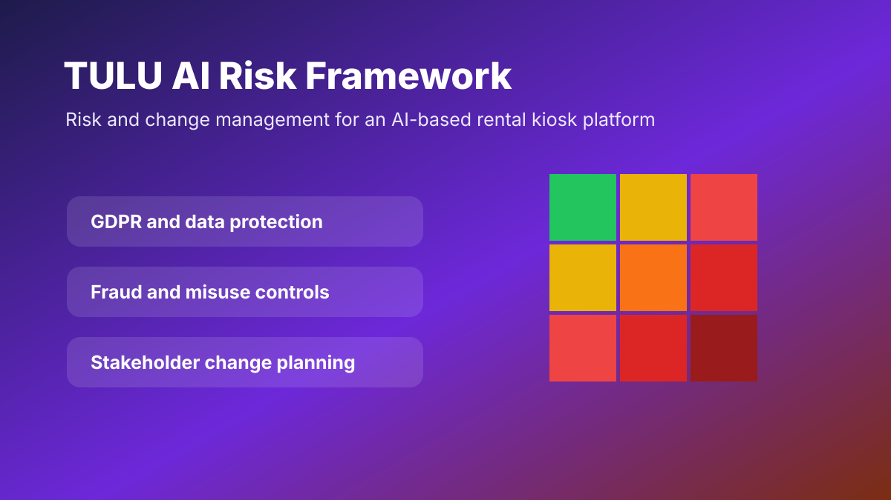

TULU AI Rental Platform Risk Framework
Created a risk and change management framework for an AI-based rental kiosk platform, covering operational, technical, compliance and user-adoption risks.

TULU AI Risk Framework Full Document
Document Preview
This document explains the risk and change framework, key risk areas, recommended controls and governance thinking for the AI rental kiosk platform.
- GDPR and privacy risk
- Fraud and misuse controls
- Inventory and operational risk
- Change management and adoption planning
Privacy and data handling risk controls.
Misuse, verification and transaction risk planning.
Stakeholder adoption and operational transition planning.
Project Context
The project assessed an AI-enabled rental kiosk concept where users rent items through a digital platform. The main challenge was to identify risk points across identity, payment, inventory, AI decisioning, system uptime and customer trust.
Risk Matrix
Controls Recommended
- Clear user consent and privacy notices for personal data.
- Payment and identity validation controls to reduce fraud.
- Inventory reconciliation checks to reduce mismatch and loss risk.
- Manual escalation route when AI decision confidence is low.
- Change communication plan for users, support teams and business stakeholders.
Outcome
The project demonstrates how governance and change planning can be embedded early in AI product design, rather than treated as a final compliance step.